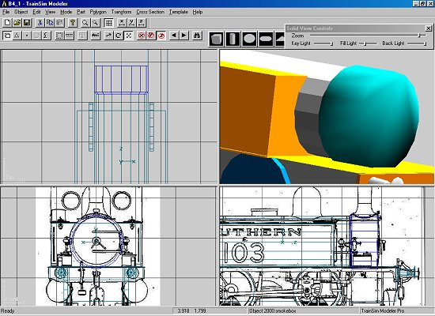
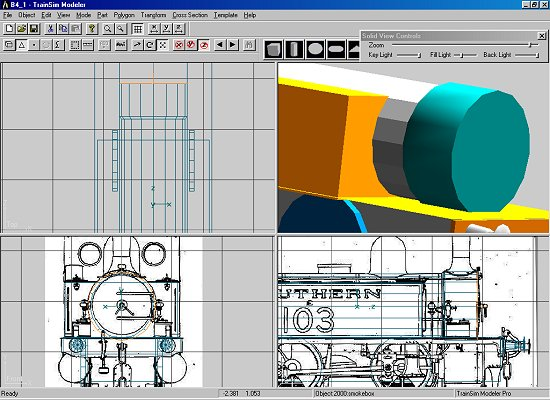

Constructing A Steam Loco Using Train Sim Modeler
Part 2
by Richard Osborne
Adding "Big" Lumps
Let's establish the total length by adding buffers. These will be tubes squeezed, pulled & pushed into shape. In TSM 95% of your parts will start as primitives.
TSM has provision for templates, structures & all manner of twiddley bits - I don't even use them, they're more useful for architectural models.
A sketchpad is a good idea, a few doodles to give an idea of the part. Make a bufferbeam from a box, scale & move it to fit. Copy & paste, move to the other end. For the buffers I'll have a tube of 12 points & 5 sections, with the left face ticked. We already have a value for the 'x' axis.
Go into 'polygon' mode, cycle through, select the end polygon & 'Subdivide'. You'll see that the 12 sided polygon has become 12 triangles. It's important to realize that MSTS does this anyway -you're not adding to the polygon count. MSTS sees every part as a collection of triangles - a rectangle is seen as 2 triangles. This explains the 'After Conversion' figure in the 'Project Statistics' screen.
We want to find the centre point of those polygons & move it out slightly. Pull, push & squeeze until you get a decent buffer shape.
We need to separate the buffer head from the stock. Name your part 'buffer_1', 'smooth, parent 'main', change colour. Go into 'polygon' mode, lasso the head & 'split part'. The last part will be current. Into 'point' mode &, as a precaution, move the shank slightly into the stock. F2, change the name to 'buffhed1' & save. Notice the parent part is already there. 'P' goes back to the buffer stock, save it as 'buffer1'
Load 'buffer1' - it'll be superimposed. F2, change the 'x' value negative, change the name to 'buffer2'. load & change 'buffhed1'. You now have a pair of identical buffers.
Load twice more, for the 3rd buffer change the 'z' axis negative; for the 4th change the 'z' & 'x' axes. You now have 4 sets of buffers. We're not quite finished.
We have a pair of buffers facing inwards. Cycle through the last 4 parts individually & flip them in 'z' axis.

Now we have the loco to its full length. Save the project, recreate it & export it to MSTS. This time we only need to 'Convert to Binary' 'Replace existing Files'. We can either make a new .eng file at this stage or amend the existing file in "Wordpad". We need to alter the length to agree with the .sd file - 7.738m.
Believe it or not we've covered about 85% of construction in TSM!
Let's add some other big lumps. The tank is just a box; this one's mostly for show, we'll be left with top & front - the rest will be split off & joined to the cab.
It'll be no surprise that the boiler is a tube, 3 sections to include the smokebox. Place the axis of the boiler to the right height, in this case the clack valve is at centre height. As for the buffers, move & scale until we have a smokebox, slightly larger diameter.
Split off the smokebox & smokebox ring. With the part smoothed look at the front end. We need to split the smokbox front in order to keep the shape. Smoothing works by averaging adjacent polygons - we're over-reaching!

Much better!

Take another look at it on the track.